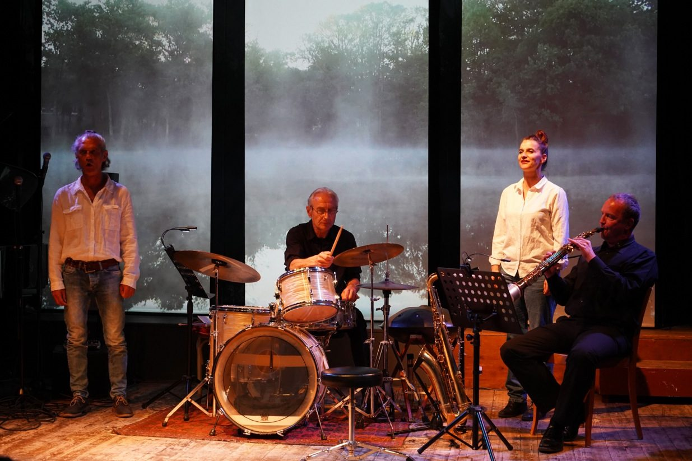
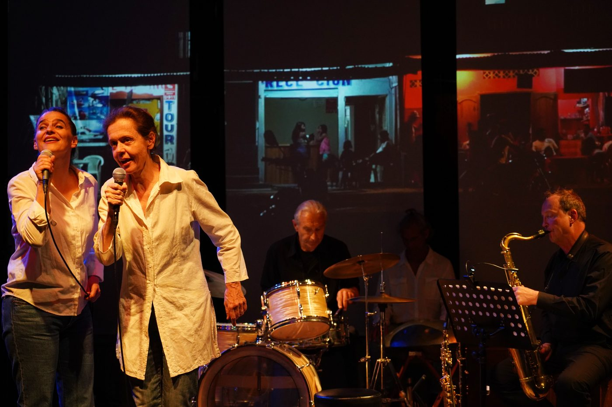
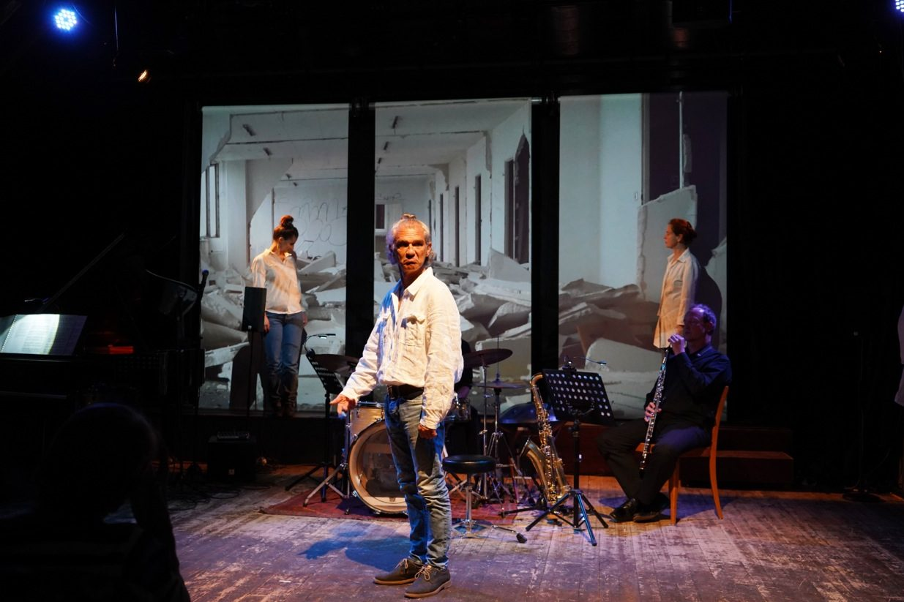
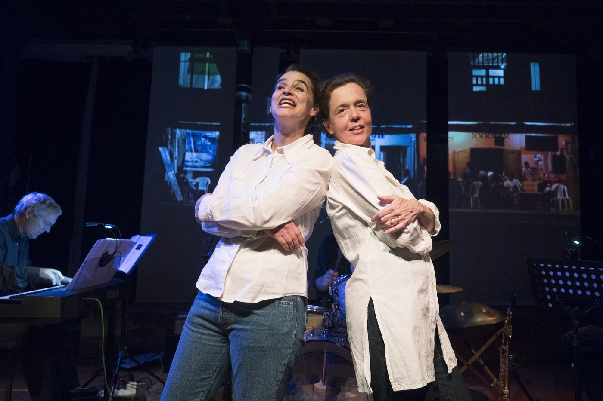
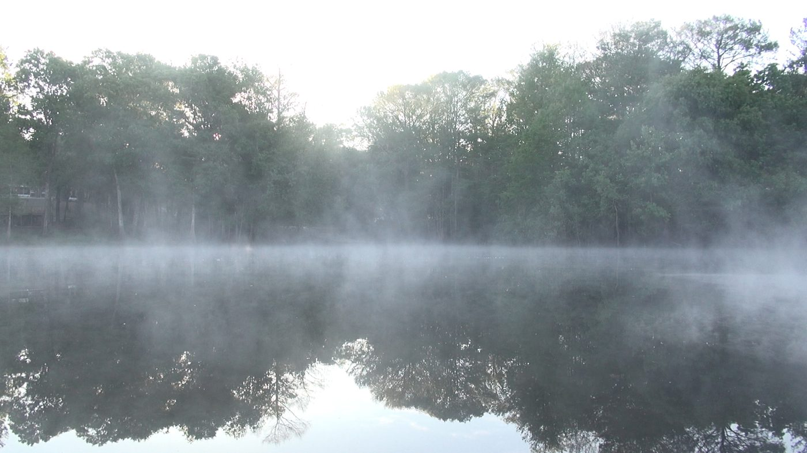
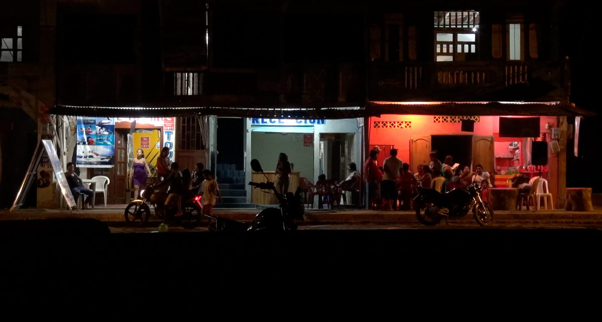
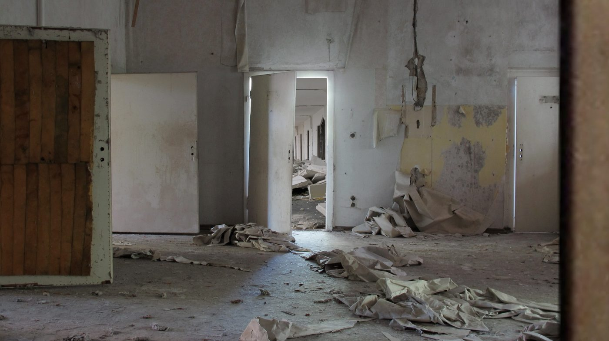

Drei Musiker, drei SchauspielerInnen, eine Videokünstlerin und ein Autor setzen sich mit dem Phänomen Zeit auseinander. Tauchen Sie ein in eine Welt der sprechenden Bomben, entdecken Sie die magischen Klänge der Eigernordwand, streifen Sie mit dem Kanu durch die Nebenflüsse des Amazonas, verpassen Sie den Vollmond, der nur alle dreissig Jahre durch das Martinsloch scheint und bleiben Sie sitzen, auch wenn es Polizeistunde geschlagen hat.
Fluctus entstand im Rahmen des Kulturprojekts «Die andere Zeit» der Albert Koechlin Stiftung.
«Und so setzten denn John Wolf Brennan am Piano, John Voirol mit dem Saxophon und Marco Käppeli am Schlagzeug den Urknall in wunderschön dissonanter Musik in Szene.» Romano Cuonz, Luzerner Zeitung
«Das musikalisch, filmisch und szenisch umgesetzte Stück durchbrach immer wieder seine verschiedenen Ebenen.» Daria Wechsler, 041 Kulturmagazin
- Spiel
- Franziska Senn, Lilian Naef, Reto Baumgartner
- Stück / Regie
- Ueli Blum
- Musik
- John Wolf Brennan (Komposition/Piano), Marco Käppeli (Schlagzeug), John Voirol (Saxophon/Oboe)
- Videoinstallation
- Susanne Hofer
- Licht
- Martin Brun







